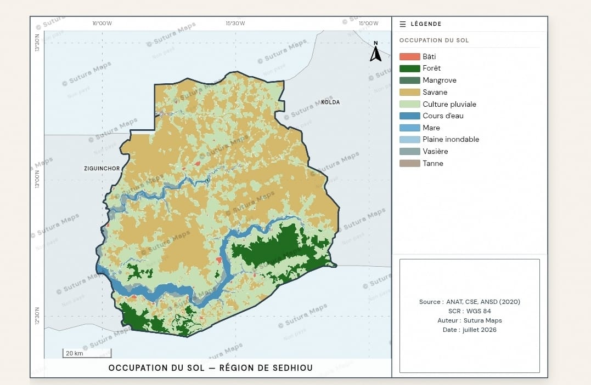
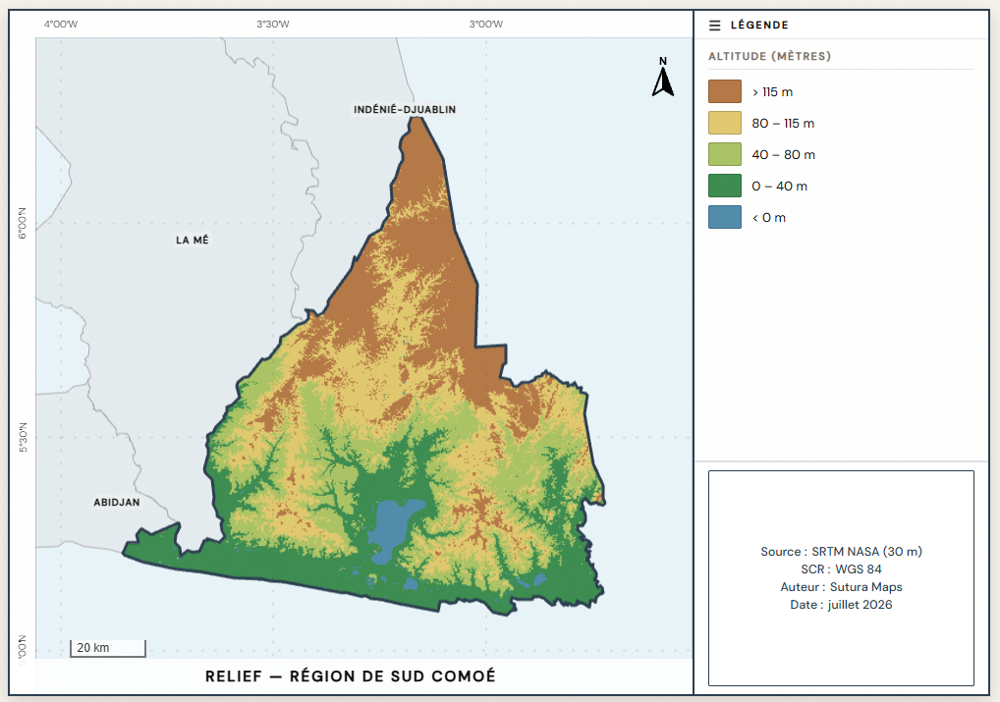
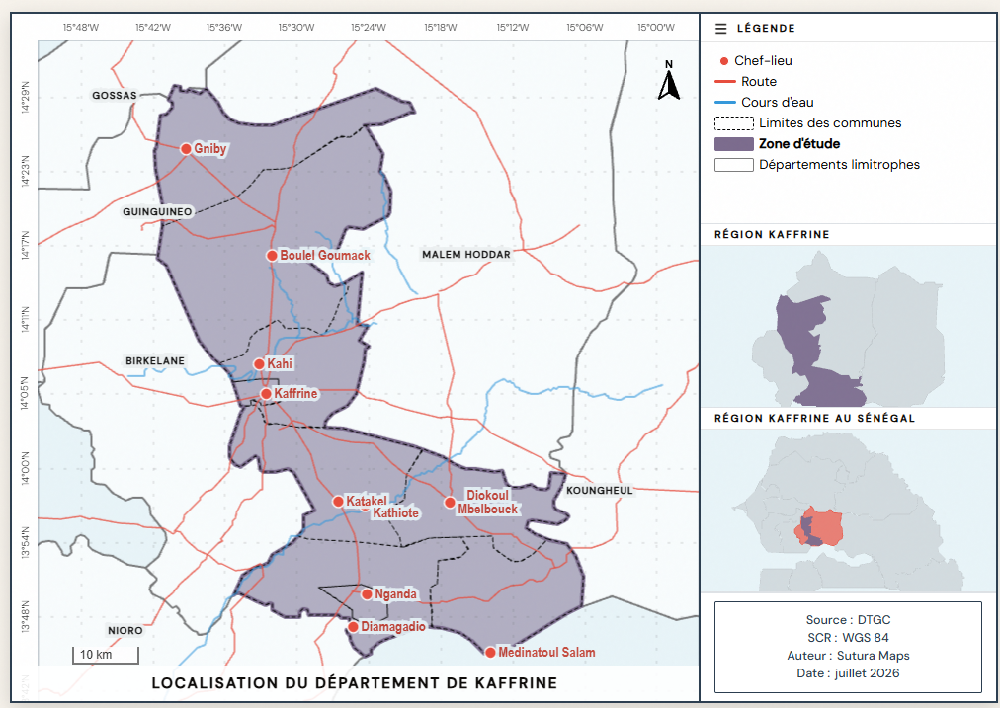
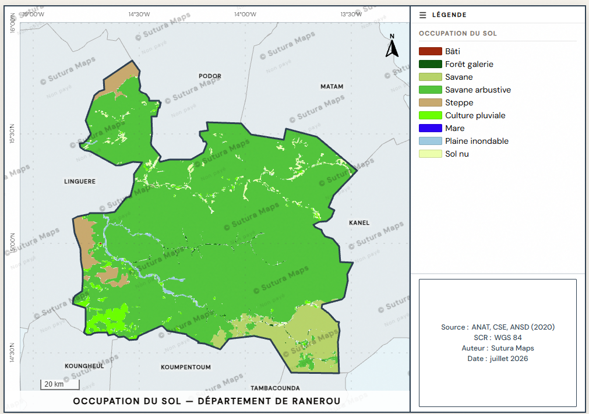
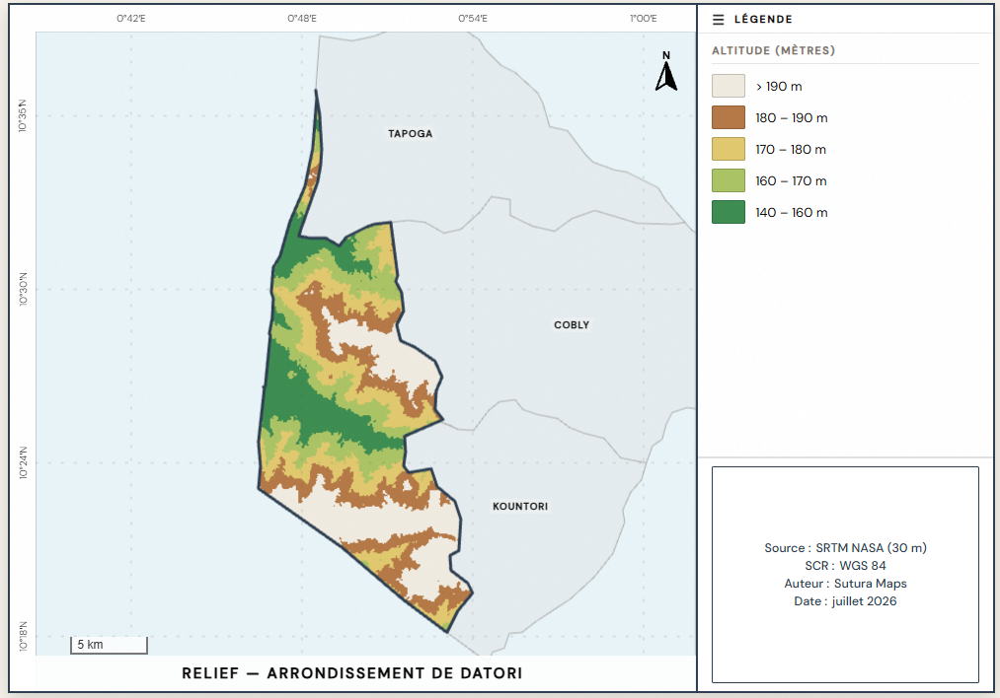

Sutura · Discrétion · Dignité · Autonomie
Localisation, occupation du sol, relief.
En une minute.
Ce qui vous prenait une journée sur QGIS, vous l'avez ici en une minute, sans rien installer. Communes, départements et régions du Sénégal et d'Afrique de l'Ouest, à partir de données officielles.
Voir votre carte est gratuit. Vous payez 2 000 FCFA seulement pour la télécharger en HD, sans filigrane. Satisfait ou remboursé sous 24 h.
Notre philosophie
Un mot wolof qui n'a pas d'équivalent direct : la discrétion, la retenue, la dignité. Quatre valeurs qui guident chaque décision de Sutura Maps.
Produire un travail de qualité professionnelle sans avoir besoin d'un logiciel SIG complexe.
Ne plus dépendre de quelqu'un d'autre pour faire sa carte. Votre travail, sous votre contrôle.
Rendre un rapport avec une carte dont vous êtes fier, pas une image floue capturée à l'écran.
Aucune installation. Aucun fichier à gérer. Juste un navigateur et votre zone d'étude.
Ce que vous obtenez
Région → Département → Commune. Trois sélections et votre carte se génère avec tout le contexte spatial.
Localisation, occupation du sol et relief (MNT). Une seule plateforme pour vos cartes de situation, d'usage des terres et d'altitude.
Au bureau ou sur le terrain, avec une connexion basique, un téléphone. Sutura vous accompagne sans contrainte technique.
Localités, routes, cours d'eau, occupation du sol, altitude — découpés précisément à l'emprise de votre zone. Sources citées sur la carte.
Aucune donnée partagée, stockée ni exposée. Votre travail reste confidentiel. C'est le sens de Sutura.
Prêt pour l'impression et les rapports institutionnels. Qualité professionnelle, sans logiciel supplémentaire.
Comment ça marche
Votre carte est prête.
Pays, région, département, commune. Le type de carte que vous voulez : localisation, occupation du sol ou relief. Elle se génère sous vos yeux, sans toucher un seul fichier.
Couleurs, nom de l'auteur, sources. Vous voyez le résultat en entier, gratuitement, avant la moindre dépense. Vous décidez seulement si elle vous plaît.
2 000 FCFA en mobile money, et votre PNG haute définition sans filigrane est à vous. Prêt pour votre mémoire ou votre rapport, à l'instant. Satisfait ou remboursé sous 24 h.
Des cartes déjà générées
Ida Mouride · Sénégal

Région de Sédhiou · Sénégal

Sud-Comoé · Côte d'Ivoire

Département de Kaffrine · Sénégal

Département de Ranérou · Sénégal

Arrondissement de Datori · Bénin
Tarification
Un cartographe vous facturerait plusieurs milliers de francs et plusieurs jours d'attente pour le même travail. Ici, c'est 2 000 FCFA et une minute. Pas d'abonnement, pas de compte.
FCFA
par carte · paiement unique
Gratuit
pour voir la carte
Payez après
uniquement si satisfait
Remboursé
sous 24 h si besoin
« Une carte de région entière, c'est plusieurs jours de travail SIG ailleurs. Ici, une minute, à partir de données officielles. Même tarif que pour une commune. C'est ça, démocratiser la carte. »
Retours utilisateurs
L'application va arranger beaucoup de gens. Parfois quand tu es pressé pour avoir une carte, et ceux qui ne peuvent pas en faire ou n'ont pas suivi la formation, surtout les nouveaux masters. Je vais la partager dans nos groupes.
Binta D.
C'est vraiment adorable. En naviguant on sent la pertinence. C'est une innovation très intéressante. Moi personnellement ça m'intéresse vraiment. Merci beaucoup Grand Abdou pour ces réalisations.
Souleymane G.
Trop fort. C'est excellent.
Mamadou K.
Waaaw, c'est extraordinaire. Et facile à faire. Un vrai gain de temps.
Modou T.
Questions fréquentes
Par mobile money : Wave, Orange Money ou MaxIt. Le paiement est sécurisé. Aucun compte à créer, aucune carte bancaire nécessaire.
Un fichier PNG haute définition, sans filigrane, prêt à insérer dans un mémoire, un rapport, une présentation, ou à imprimer. Selon le type choisi : localisation (avec la situation dans le département et la région), occupation du sol ou relief (MNT). Légende, échelle et sources incluses.
Vous générez et voyez votre carte gratuitement. Vous ne payez que si elle vous convient, au moment de télécharger la version HD. Aucun risque.
Si la carte téléchargée ne vous convient pas, écrivez-nous sur WhatsApp dans les 24 heures qui suivent votre achat. Vous êtes remboursé, par le même mobile money.
Sénégal : les 557 communes, 45 départements et 14 régions, en localisation, occupation du sol et relief. Afrique de l'Ouest : le relief (MNT) s'ouvre pays par pays, à commencer par le Bénin et la Côte d'Ivoire. Une zone manque ou semble incorrecte ? Écrivez-nous sur WhatsApp avec le nom de votre zone, on regarde avec vous.
Voir votre carte est gratuit. Vous n'avez rien à perdre, et une journée de travail à gagner. Générez-la maintenant, décidez ensuite.